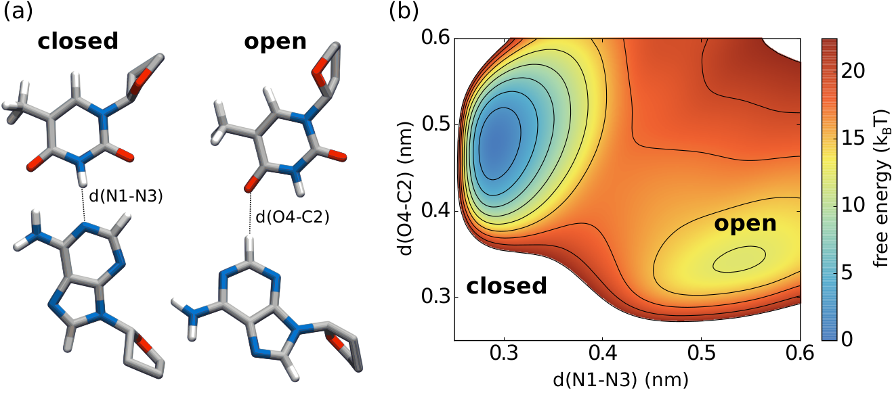
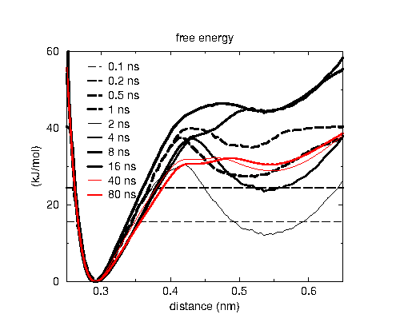
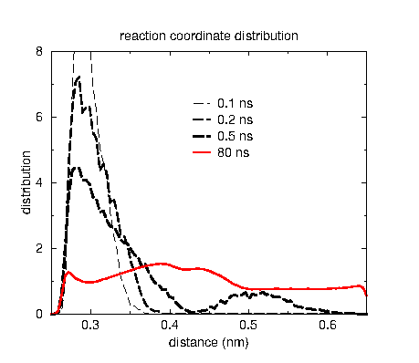

Accelerating sampling with the AWH method¶

The accelerated weight histogram (AWH) method is an efficient and easy to use adaptive biasing method for sampling reaction coordinates with arbitrarily high free-energy differences and barriers. The advantages of the method are:
Convergence in log(free energy) time to an error of kT, which enables very quick crossing of high free energy barriers
Automatic detection of convergence to an error of the order of kT, after which the convergence follows the usual 1/sqrt(time) behavior
Only one, uncritical parameter to set, the initial update size (although this is set using an initial error and a diffusion constant)
The target distribution can be chosen freely; uniform is the common choice
Robust method, issues can be detected by comparing the current distribution with the target, warnings are printed with a large mismatch
Easy and massive parallelization using multiple copies of the system that contribute to the same AWH bias
Can act on one up to four dimensions
Can act on pull reaction coordinates and the alchemical lambda
A metric is computed which provides the friction along the reaction coordinate; this can also be used to judge the quality of the reaction coordinate(s)




The two plots show how the free energy estimate and the distribution converge for DNA base pair opening, where the barrier is rather high with 30 kJ/mol or 12 kT. The reaction coordinate is the distance between two nitrogen atoms in a hydrogen bond between base pairs, which is the N1-N3 distance in the picture on top. The black curves are in the initial phase where the error decreases exponentially. AWH automatically switches to the final phase, where all samples weight equally, indicated with the red curves. Note that for the free energy estimate to be accuracy the sampling doesn’t need to exactly match the, in this case uniform, target distribution.
The application of AWH to DNA base pair opening is available as an online GROMACS tuturial at: https://tutorials.gromacs.org/. A description of the implementation in GROMACS can be found in webinar format here.
Since GROMACS 2024 it is possible to automatically scale the AWH target distribution based on a local diffusion metric. This has been shown to improve the sampling efficiency by more than 50%.
References:
Method:
- J. Lidmar, “Improving the efficiency of extended ensemble simulations: The
accelerated weight histogram method”, Phys. Rev. E, 85, 0256708 (2012) doi:10.1103/PhysRevE.85.056708.
- V. Lindahl, J. Lidmar, and B. Hess, “Accelerated weight histogram method for
exploring free energy landscapes,” The Journal of chemical physics, 141 [4] 044110 (2014) doi:10.1063/1.4890371
Metric reference:
- V. Lindahl,J. Lidmar and B. Hess, “Riemann metric approach to optimal sampling
of multidimensional free-energy landscapes”, Phys. Rev. E, 98, 023312 (2018) doi:10.1103/PhysRevE.98.023312
DNA reference:
- V. Lindahl, A. Villa, and B. Hess, “Sequence dependency of canonical base pair
opening in the dNA double helix,” PLoS computational biology, 13 [4] e1005463 (2017). doi:10.1371/journal.pcbi.1005463